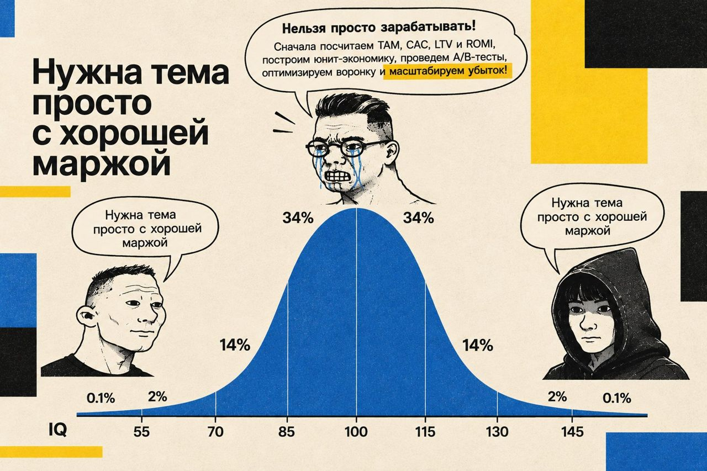
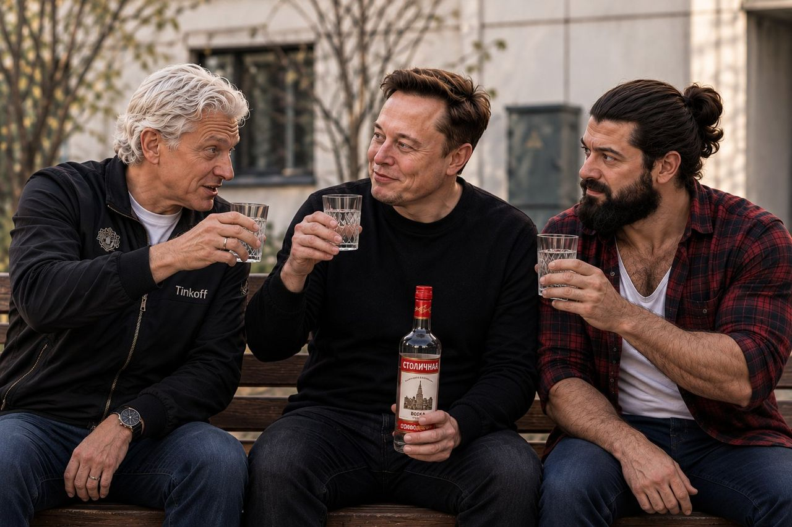
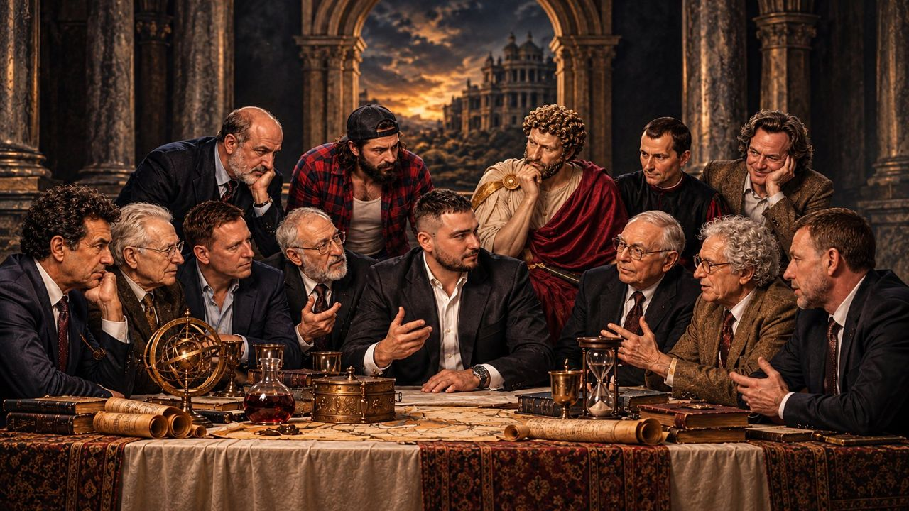
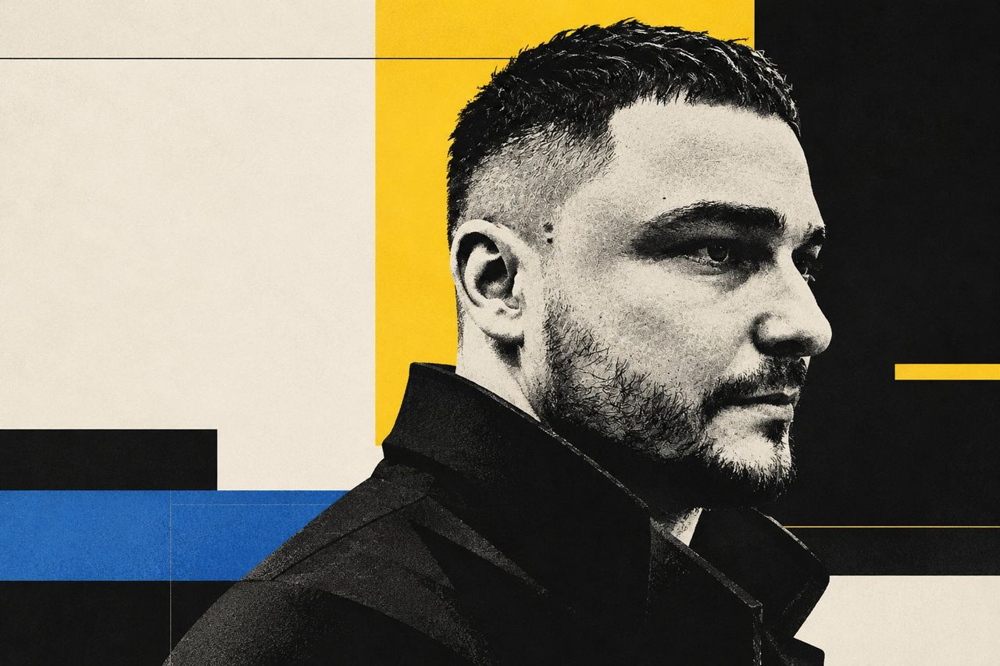

Бизнес не обязан быть сложным. Но вы обязаны знать, где ваши деньги, кто держит рычаги и сколько стоит ваша ошибка
Независимый разбор экономики вашей ситуации. Смотрю на неё через экономику, теорию игр, институциональные ограничения, поведение людей, информационную асимметрию и переговорные стратегии. Универсальных рецептов не ищу: нужно решение, у которого есть экономический смысл именно в вашем случае. Потолок потерь называю до первой сделки, доход не обещаю. Если дело уже встало, экстренно расшиваю управленческие и финансовые тупики: достаю деньги из кассовых дыр, зависших активов и разрушительных партнёрств.
«В мире совершенной конкуренции вся прибыль оказывается вытеснена конкуренцией»
Резон исследует структуру рынков, бизнес-модели конкурентов, поставщиков и партнёров, доступные активы и скрытые источники маржи. Мы ищем возможности выйти из ценовой конкуренции и обнаружить экономические преимущества, которые другие участники рынка уже используют, а вы пока не замечаете.
Капитал не сводится к деньгам
Капитала у вас больше, чем вы думаете. Его просто никто не считал. Что в нём главное, у каждого своё: у одного доверие клиентов, у другого доступ к поставщику, у третьего знание, которого нет у рынка. Это я нахожу в разборе.
Большинство владельцев остаются в своём деле техниками: сами делают работу, сами тушат пожары, сами и есть главный актив, который нельзя продать. Капитал начинается там, где дело работает без вашего участия.
Каналы продаж
Те, кто уже покупает у вас или готов купить по звонку: дилеры, постоянные оптовики, наработанная база заказчиков. Считаем не охваты, а регулярность платежей и маржу со сделки.
Деньги
Сумма, потеря которой не ломает ни жизнь, ни бизнес.
Навыки
То, что вы делаете лучше большинства и за что платят.
Доступы
Двери, которые открываются вам и закрыты другим: поставщик, закупщик, площадка, лицензия, человек, принимающий решения. Актив, которого нет ни в одном балансе.
Активы
Оборудование, помещение, запасы, лицензии.
Непубличная информация
Знание рынка, цен и людей, которого нет у остальных и которое не найдёт ИИ.
Пять шагов от «что у меня есть» до решения
Где поставить свой шлагбаум
Ищу место, где вы можете монополизировать или квазимонополизировать создание ценности. Или захватить узкое горлышко и поставить там свой шлагбаум.
Пока вы продаёте свои часы, вы зарабатываете, но не копите капитал. Капитал работает, когда деньги приходят от актива или рычага, а не от вашего присутствия. Поэтому я ищу не то, что вы умеете делать, а то, чем вы можете владеть.
Монополия на создание ценности
Ищем, где ценность создаёте только вы или почти только вы и где конкурент не повторит это быстро. Монополия или квазимонополия.
Узкое горлышко
Ищем точку, через которую обязаны пройти чужие деньги, сделки или клиенты. Занимаем её и ставим шлагбаум: кто проходит, тот платит.
Если у дела нет ни уникального продукта, ни рва, ни дефицита, ни цены ниже, чем у конкурента, шлагбаум ставят не на продукт, а вокруг него.
Допуск
Лицензия, сертификат, аккредитация, место в реестре. Продукт у всех одинаковый, а допущенных мало: допуск и есть шлагбаум.
Мощность и слоты
Очередь на завод, окно на погрузке, склад, квота. Дефицит не в товаре, а в том, через что он проходит.
Деньги в цепочке
Кто финансирует поставку, тот диктует условия: предоплата, рассрочка, факторинг под уже найденного покупателя.
Гарант сделки
Сторона, которой верят оба: проверка контрагента, приёмка, эскроу. Плата берётся за то, что никто никого не обманет.
Привязка клиента
Расходники, запчасти, сервис, обучение, совместимость. Купить можно у любого, а продолжать придётся у вас.
Капитал
Доступы
Каналы продаж
Разбор ваших переговоров
Разбираю ваши переговоры с партнёрами, поставщиками, клиентами, регуляторами и силовиками. Методами переговорщиков ФБР, правительств и профессиональных дипломатов.
Беру запись и переписку. Показываю, где вы потеряли позицию, чего на самом деле хотела другая сторона и что говорить дальше. С пересказом лучше не работать: слишком велики могут быть искажения.
Информационную асимметрию у вас убираем*, у них оставляем
ИИ работает на полную. У вас асимметрия исчезает. Она остаётся у тех, кто продаёт вам дёшево или покупает у вас дорого.
Вы видите всю картину: реальные цены, условия, альтернативы и то, что на самом деле стоит за предложением другой стороны.
Тот, кто продаёт вам дёшево или покупает у вас дорого, видит только свой кусок картины. Разница между его картиной и вашей и есть ваша маржа.
* Убрать асимметрию можно, если информация по теме хотя бы частично публична или доступна: недостающее достраивается экстраполяцией известных данных. Если информация закрыта полностью, это рычаг той стороны, которая знает. Так было и в древности, и ИИ здесь не поможет.
Возможно, рядом с вами кто-то гребёт деньги лопатой, используя те же ресурсы
Ваш поставщик, партнёр, конкурент или компания из совершенно другой отрасли может зарабатывать на тех же активах и доступах значительно больше.
Резон использует экономический реверс-инжиниринг: по неполной информации восстанавливает вероятную механику чужих бизнес-моделей. Один и тот же ресурс приносит разные деньги, смотря какая у владельца бизнес-модель и где он стоит в цепочке.
Подтверждённая информация из доступных источников.
Реконструкция вероятной экономики по неполным данным. Предполагаемую маржинальность конкурентов за установленную не выдаём.
Проверяемые варианты применить найденные механизмы в вашем бизнесе. Проверяем малой ставкой и прибыль не обещаем.
Работаем только с законно полученной информацией: открытые данные, ваши документы, коммерческие предложения, интервью и собственные наблюдения.
ИИ даёт доступ к знаниям. Опыт даёт понимание цены ошибки. Экспертиза превращает это понимание в решение.
99 из 100 предпринимателей живут в зазеркалье когнитивных искажений
Ошибка невозвратных затрат
Вы тянете убыточную точку или станок, потому что вбухали туда 2 миллиона в прошлом году.
Ошибка планирования
Рассчитывали запуститься за месяц и 500 тысяч, а стройка идёт полгода и сожрала уже два миллиона.
Предвзятость подтверждения
Вы верите, что реклама вот-вот сработает, и сливаете оборотку третий месяц подряд.
Эффект владения
Вы оцениваете свой бизнес в 15 миллионов рублей, хотя реальный покупатель не даёт и пяти.
Ошибка выжившего
Вы копируете схему из кейса, который увидели в ленте, а о сотне таких же, кто на ней разорился, никто не писал.
Эффект сверхуверенности
Вы уверены, что вложение окупится за три месяца, потому что «я же в теме», и не оставили запаса на случай, если не окупится.
Эффект якоря
Первая названная цифра управляет торгом: вы спорите о скидке от цены поставщика, а не о том, сколько товар стоит на самом деле.
Иллюзия контроля
Вы держите под личным надзором каждую мелочь и считаете, что это защита от рисков, а курс, поставщик и рынок от вашего надзора не зависят.
Эффект ореола
Вы поверили партнёру или топу из-за одного яркого качества, харизмы, связей или красивой презентации, и не проверили всё остальное.
В разборе я нахожу, какое искажение сидит в вашем конкретном решении и сколько оно уже стоило вашей кассе.
Каждый прав в своей части. Итог ложится на вас
Вокруг серьёзного решения всегда три вектора. Каждый честен по-своему и тянет в свою сторону. Куда в итоге поедет ваш бизнес, не считает ни один из них.
Вы, собственник
Ваша задача: сохранить и приумножить капитал. Вы отвечаете за итог целиком: за деньги, доли, репутацию и время. Решение вы принимаете одним куском, а информация приходит по кускам.
Другая сторона
Партнёр, поставщик, покупатель, оппонент. У неё свой интерес: купить дешевле, продать дороже, уйти с большей долей. Это не злой умысел, это её роль в сделке. Вашей картины у неё нет, как и вы не видите её картину.
Команда и специалисты
Юрист, маркетолог, консультант, менеджер. Каждый честно решает свою задачу: юрист отвечает за риск, маркетолог за спрос, менеджер за исполнение. Но сумма участков не равна итогу для бизнеса, а итог никто из них считать не обязан.
Резон не владеет универсальными правильными ответами и не подменяет ни юриста, ни маркетолога, ни консультанта, ни менеджера. Он проверяет предположения, альтернативы, интересы и последствия. Профессиональные решения остаются за профессионалами, а вы видите, во что они сложатся вместе.
Острее всего интересы расходятся там, где в деле партнёры. С них и продолжим.
Застарелые конфликты и несправедливые партнёрства
Распутываю застарелые конфликты и достаю ваше из несправедливых партнёрств. На выходе вы получаете план.
Учредители «торговались» купюрами из «Монополии»
В ситуации внутреннего кризиса между учредителями я предложил провести «торги» по справедливому распределению активов, используя в качестве нейтрального инструмента купюры из настольной игры «Монополия».
Это разрядило обстановку: стороны пришли к согласию и завершили раздел без судебных споров.
Иногда план заканчивается словами «это не стоит ваших усилий». Это тоже результат: вы перестаёте платить за конфликт временем и деньгами. Юридические шаги согласуются с вашим юристом.
Иногда всё проще, чем кажется
Большинство проблем в бизнесе возникают от попыток натянуть сложную теорию на мёртвую модель. Не надо городить CRM-системы, мотивации и юнит-экономику там, где просто воруют на закупках или продают без маржи. Я ищу простоту, которая даёт деньги.
Я не предлагаю внедрять управленческую систему до того, как мы выяснили, какую проблему она должна решить и стоит ли вообще её решать. Не начинаю с готового рецепта: сначала разбираюсь в экономической механике ситуации.
Иногда прибыль растёт, когда бизнес уменьшается. Бывает направление, которое даёт выручку, но съедает маржу и время. Считаем прибыль без него.

Что это значит на деле
Сначала я ищу, где вы можете потерять деньги, и только потом, где их можно заработать. Пока потолок потерь не назван, разговор о росте остаётся разговором о надежде.
Потолок потерь назван до сделки
Вы заранее знаете сумму, которую можете потерять, и она вам по силам. Если нет, это не умеренный риск.
Сначала проверка малой ставкой
Спрос, цену и контрагента проверяют до крупных вложений. Предложение сначала получает небольшая часть клиентов, не все.
Деньги на жизнь в игру не входят
Работаю только со свободным капиталом: тем, без чего вы и ваше дело обойдётесь.
Деловая репутация не ставится на кон
Контрагентам и рынку не скармливают токсичные схемы. Одно кривое решение или подстава перечёркивает годы наработанных связей.
Четыре сценария для вашего дела
Просчитываю все четыре и называю тот, который подходит вам.
Прорыв к сверхприбыли
Ищем рычаг, который даёт кратный рост прибыли, а не прибавку в несколько процентов.
Ликвидация узкого горлышка по Голдратту
Находим звено, которое ограничивает весь результат, и снимаем это ограничение. Усилия вне узкого места результат не меняют.
Кайдзен: постепенные улучшения
Маленькие шаги, каждый проверен цифрами. Дело становится лучше без резких движений.
«Лошадь сдохла, слезь»
Эвакуируем активы из дохлого дела, несмотря на ловушку невозвратных затрат. Не каждый бизнес нужно спасать: спасение стоит денег и иногда дороже самого дела, поэтому считаем обе цифры, спасти и закрыть. Чем дольше сидите на дохлой лошади, тем меньше остаётся.
Лучше ужасный конец, чем ужас без конца.
Здесь не продают мечту. Здесь считают.
Рынок забит инфоцыганами на арендованных феррари, которые продают чужой успех в рассрочку.
Я технический аудитор управленческих рисков и ликвидатор кассовых утечек. Мой продукт не слова и не отчёты в красивых папочках, а дефектная ведомость контрактов и пошаговый протокол эвакуации ваших активов.
Кому это подходит
Экстренная расшивка тупиков
Управленческие и финансовые тупики в реальном бизнесе. Достаю ваши деньги из кассовых дыр, зависших активов и разрушительных партнёрств. Без «коучинга» и пустых стратегий: жёсткий аудит фактов и математика.
Развод с партнёром
Как разделить доли, активы и долги без судов, эмоций и блокировки счетов.
Кадровый шантаж
Как законно и быстро убрать токсичного персонажа, который тянет компанию на дно, без выплаты «золотых парашютов».
Зависшие активы
Как превратить неликвид на складах или простаивающие мощности в живые деньги за месяц.
Не все люди одинаково полезны для результата
В разборе я сортирую людей по простой классификации, три категории.
Моторы
Достигают результата в рамках возможного независимо от обстоятельств. Есть ресурсы или нет, условия благоприятные или нет: задача поставлена, и человек ищет способ её выполнить. Моторы создают результат.
Долбо*бы
Не достигают результата даже при наличии ресурсов и благоприятных условий. Когда обстоятельства ухудшаются, у них немедленно появляются объяснения, почему ничего не получилось. Иногда им везёт, но рассчитывать на везение как на бизнес-процесс нельзя.
П*здоболы
Самая неприятная категория. Позиционируют себя как моторы, производят соответствующее впечатление, уверенно обещают результат, а на практике оказываются долбо*бами. Разница между обещаниями и результатом вскрывается слишком поздно, если не проверять исполнение.
Они не предатели и не лентяи. Они просто реагируют на стимулы.
Главная ловушка собственника: морализаторство. «Я плачу ему выше рынка, а он саботирует», «Мы с ним начинали с нуля, а он меня предал». Эти мысли сжигают психику и ведут к параличу решений.
Запомните: для разбора «предательство» не категория. Есть баланс стимулов и цена последствий.
Вы не обязаны быть хорошим человеком. Вы обязаны понимать последствия своих решений. Простить зама, над которым нет контроля, тоже решение, и у него есть цена.
Люди в вашей компании действуют строго в рамках своих способностей и созданных вами условий:
Это не значит, что так можно: воровство остаётся воровством. Но обижаться бесполезно, это позиция жертвы. Моя задача на разборе: убрать эмоции, просчитать реальные стимулы и расставить такие институциональные флажки, при которых вредить вам станет экономически невыгодно.
В долгосрочной перспективе состав команды и партнёров определяет траекторию бизнеса. Лучше с умным потерять, чем с дураком найти.
Умножение на ноль даёт ноль
Резон работает как мультипликатор. Если сегодня ваш капитал, доступы, каналы продаж и рычаги равны нулю, моя работа результата не даст. Ноль на любое число даёт ноль.
Представьте: Илон Маск, Олег Тиньков и Алекс Хормози разбирают вашу ситуацию и ищут, как помочь, но не могут просто дать вам денег или инсайд. Если в итоге они плюнут и пойдут за водкой, то и со мной возможен один разговор: на какую работу вам реально устроиться. И платить за него вам, скорее всего, будет нечем.

Сначала разберитесь, чего вы хотите
Если у вас кризис смыслов: вы не знаете, чего хотите, и не можете разобраться в отношениях, здоровье, устройстве мира или своей миссии, Резон не поможет. Зарабатывать бессмысленно, пока непонятно, ради чего.
Если деньги на это есть, могу порекомендовать профессионалов.
Любителям статусных декораций и карго-культа
Если для принятия решений вам обязательно нужны:
вам точно не ко мне.
Я не продаю социальные сигналы и не пускаю пыль в глаза. Полно инфоцыган на арендованных феррари: они снимают ролики на фоне чужой машины, показывают скриншоты чужих доходов и продают «систему» в рассрочку тем, кому нечего терять.
Я работаю как полевой хирург: ко мне приходят не любоваться на часы врача, а когда нужно остановить артериальное кровотечение в бизнесе, разрезать застарелый конфликт и вытащить активы из-под удара.
Если вам важнее, КТО говорит (форма и понты), а не ЧТО говорят (цифры и риски), вы гарантированно переплатите шарлатанам. Не тратьте моё и своё время.
Соматика, биохакинг и духовные практики
Я не заставляю медитировать, не учу правильно дышать и не прописываю диеты. Физическое здоровье критично: если тело собственника разваливается от стресса, никакой бизнес не выдержит перегрузок. Но разбор Резона не про спорт и не про медицину. Если у вас проблемы со здоровьем, я могу посоветовать, что делать, но вести по пути оздоровления не буду. Со мной вы разбираете только экономику, доступы и риски.
Семейные драмы, детские травмы и выяснение отношений
Я не семейный психотерапевт. Меня не интересует, «кто кому сломал лучшие годы жизни» и кто виноват в измене. Если ваш бизнес или капитал трещит из-за развода, мы убираем эмоциональный театр и смотрим на ситуацию строго по Семейному и Гражданскому кодексам: как на раздел активов между двумя жёсткими деловыми оппонентами.
Моя задача: достать ваш капитал целым, а не помирить вас на кухне.
Интеллектуальная основа метода
Двенадцать мыслителей. Каждый закрывает свою задачу в разборе: где искать ограничение, как считать цену конфликта, когда сворачивать ставку.
За этим столом: на чьих идеях стоит метод

«Невидимая рука часто кажется невидимой потому, что её часто просто нет».
«Главная причина, по которой выгодно создавать фирму, как представляется, в том, что использование механизма цен связано с издержками.»
«Конкуренция для неудачников.»
«Не говорите мне, что вы думаете. Скажите, что у вас в портфеле».
«Сделайте людям предложение настолько хорошее, чтобы они почувствовали себя глупо, отказавшись».
«Час, потерянный на узком месте, это час, потерянный для всей системы. Час, сэкономленный не на узком месте, это мираж».
«Препятствие действию продвигает действие. То, что стоит на пути, само становится путём».
«Всё, что я хочу знать, это где я умру, чтобы никогда туда не ходить».
«Людей следует либо ласкать, либо уничтожать, ибо за малое зло человек отомстит, а за большое не сможет».
«Вы в основном сами делаете себя ненужно и невротически несчастными, упорно держась абсолютистских иррациональных убеждений…»
«Первый принцип: вы не должны обманывать себя, а себя обмануть проще всего».
«Слово „нет“ это начало переговоров, а не их конец».
Цитаты даны в переводе.
Михаил Алексеев

Автор методологии Резона. 15 лет генеральный директор: промышленное оборудование, экспорт, сложные сделки на рынках Азии и Европы.
Резон переносит этот способ мышления на капитал и доступы предпринимателя и просто человека: сначала считать, потом рисковать.
Результат разбора: не «понимание», а снятие ступора
Собственник может быть достаточно компетентен, чтобы построить бизнес, и недостаточно независим, чтобы увидеть, что именно мешает ему расти.
Большинство собственников и без консультантов прекрасно понимают свои проблемы.
Вы и так знаете, что партнёр перестал тащить и выводит деньги. Знаете, что начальник цеха саботирует задачи. Знаете, что склад забит неликвидом, а поставщик выкручивает руки. Но от того, что вы это понимаете, в кассе ничего не меняется.
Понимание не даёт импульса к действию, пока вы зажаты между страхом обострить конфликт и желанием всё исправить. Этот внутренний клинч сжигает всю вашу энергию на бессонницу и прокручивание диалогов в голове.
Моя задача: убрать этот паралич и перевести тупик в одно точное действие.
Вы выходите из разбора не с «пищей для размышлений», а с разряжённым напряжением и готовым ружьём в руках.
Экспресс-разбор: из тупика в первое действие за 2 часа
Личный разбор тупикового узла в Zoom или лично в Москве. Вы уходите не с «пищей для размышлений», а с протоколом: что сказать, что подписать и от чего отказаться.
На выходе: дефектная ведомость ситуации и пошаговый протокол первого действия. Вы закрываете ноутбук с чётким пониманием: что конкретно сказать, что подписать и от чего отказаться в понедельник в 9:00 утра.
40 000 ₽ при оплате переводом в России. 500 USDT при оплате криптовалютой для клиентов за пределами России. Продолжительность: 2 часа. Решаете вы: если в первые 30 минут созвона поймёте, что попадания в вашу проблему нет, возвращаю 100% суммы без споров.
Если тупик держит на складе миллионы или партнёр выводит деньги, один месяц промедления стоит дороже этих 40 000 ₽.
Что потребуется от вас
Два часа времени, 40 000 рублей (500 USDT для клиентов вне России) и фактическая информация о бизнесе. Встреча проходит в Zoom или лично в Москве.
Чем полнее исходная информация, тем меньше времени уйдёт на восстановление картины происходящего и тем больше останется на поиск решений.
Можно просто прийти на встречу и изложить ситуацию своими словами. Но тогда эффективность первого разбора будет ниже: часть времени придётся потратить на сбор исходных данных.
Я не экстрасенс и не следователь. Чтобы найти решение, мне нужна фактическая картина бизнеса, а не только впечатление собственника о происходящем.
А если нужна хирургия?
Если ситуация простая, двухчасового экспресс-разбора достаточно: вы получаете протокол первого шага, понимаете механику и в понедельник делаете действие сами.
Но если в ходе разбора вскрывается затяжная патология:
Тогда я могу войти в ситуацию лично и довести её до результата.
Я знаю, что такое кассовый разрыв, и никогда не прошу денег из вашего операционного бюджета, когда вам нечем платить зарплату или закупать сырьё. Моя проектная работа оплачивается только из тех денег, которые я вам верну, вытащу из застрявших активов или не дам украсть:
40 000 ₽ (или 500 USDT) за первичный экспресс-разбор при переходе в проект полностью идут в зачёт наших расчётов. Вы ничем не рискуете.
Напишите в двух предложениях: в чём суть затора (партнёры, поставка, персонал, зависшие активы) и сколько времени это длится.
Резон не гарантирует доход и не является инвестиционной, юридической или налоговой консультацией. Любые вложения связаны с риском потерь. Решения вы принимаете сами.